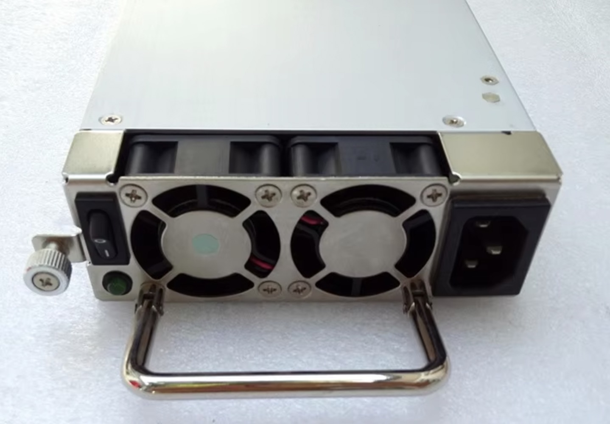

Industrial Hardware
Reliable components for industrial applications, including redundant power supplies and hard drives.

Redundant Power Supply
Industrial-grade Redundant Power Supply (RPS) designed for continuous operation. Ensures high system availability by providing automatic backup power in case of primary unit failure.
- High Reliability: 1+1 redundancy design ensures uninterrupted power delivery.
- Hot-Swappable: Modules can be replaced without system downtime.
- Comprehensive Protection: Supports OVP, OCP, and Short Circuit protection.
- Wide Input Range: Compatible with standard industrial AC/DC input voltages.
- Status Monitoring: LED indicators and alarm contacts for real-time status.
Download Datasheet (PDF)